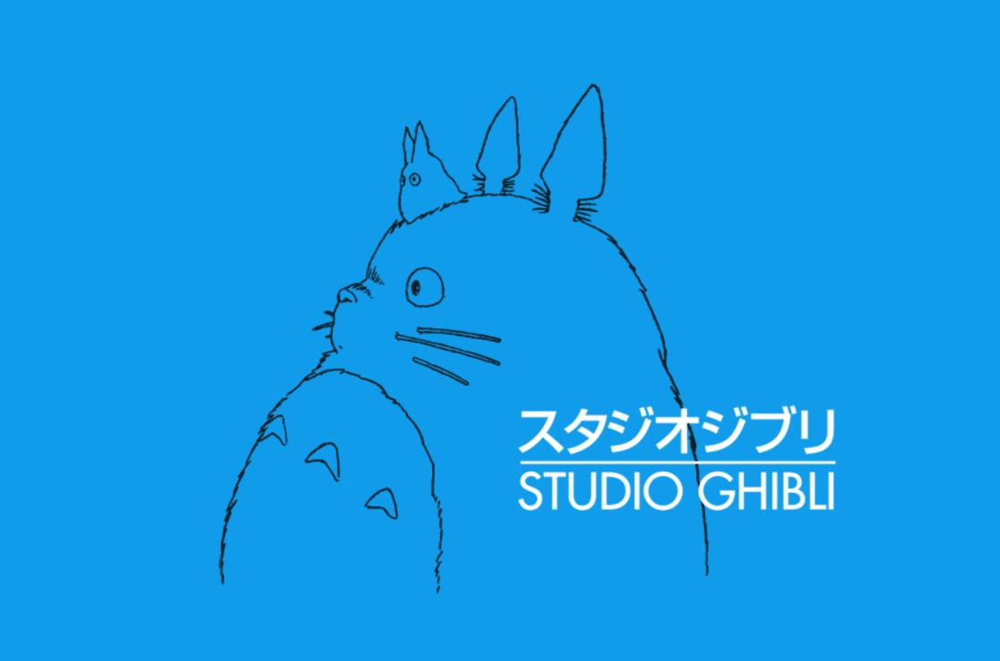

" About Studio Ghibli "
스튜디오 지브리는 '바람계곡의 나우시카'를 제작한 애니메이션 제작 회사인 '톱 크래프트'(トップクラフト)를 모체로 '타카하타 이사오'와 '미야자키 하야오'의 애니메이션 영화 제작을 목적으로 1985년 6월 15일에 도쿠마 서점의 출자로 주식회사로서 설립되었습니다. '스튜디오 지브리'의 명칭은 사하라 사막에 부는 열풍을 뜻하는 리비아어 'ghibli'에서 유래하였으며, 제2차 세계 대전 중 이탈리아의 비행기의 이름이기도 합니다. 미야자키 하야오의 생각에서 '지브리'가 되었으나, 원어에 가까운 발음은 '기블리'입니다. 스튜디오 지브리의 마크에는, 스튜디오 지브리의 작품인 '이웃집 토토로'(となりトトロ)에 등장하는 캐릭터인 토토로가 디자인되어 있습니다. 스튜디오 지브리는 2D 애니메이션계의 대표격인만큼 탁월한 시나리오와 연출 및 OST를 보유하고 있으며, 아이부터 어른까지 연령 상관없이 모두에게 재미와 깊은 감동을 선사합니다. 국내에서는 주로 '지브리 스튜디오'라고 널리 불리고 있으며, 탄탄한 마니아층을 형성하고 있습니다.
▲ 스튜디오 지브리의 공식 로고 (누르면 지브리 공식사이트 이동)
* 지브리 스튜디오의 연표
- 1985년 스튜디오 설립.
- 1991년 경영방침의 차이에 의한 대립으로 상무 하라 도루가 사임을 하고, 후임으로 스즈키 도시오가 취임하다.
- 1992년 8월 6일 히가시코가네이 역 근처 새 사옥으로 이전하다.
- 1997년 6월에 경영악화된 모회사 도쿠마 서점에 흡수되다. 같은 해 '모노노케히메' 완성 후 미야자키 하야오가 지브리를 퇴사하다.
- 1999년 도쿠마 서점의 제1 사업부문이 되다. 미야자키 하야오가 지브리의 소장으로 복귀하다.
- 2004년 도쿠마 서점 스튜디오 지브리 사업부가 주식회사 지브리 스튜디오로 분할되다.
- 2005년 4월에 도쿠마 서점 산하를 벗어나 독립하여, 스즈키 도시오가 대표이사 사장으로, 미야자키 하야오와 스티븐 앨버트가 각각 이사로 취임하다.
- 2008년 2월, 스즈키 도시오가 대표이사 사장직에서 물러나, 후임으로 전 월트 디즈니 재팬 회장이었던 호시노 고지(星野康二)가 사장에 취임하다.
▲ 스튜디오 지브리의 공식 캐릭터들